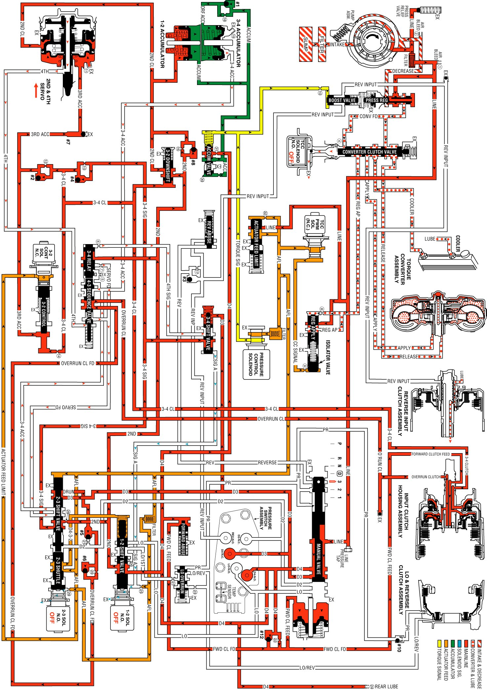

Manual Third Gear
Manual Third Gear
A manual 4-3 downshift is available to increase vehicle performance when the use of only three gear ratios is desired. Manual Third gear range also provides engine braking in Third gear when the throttle is released. A manual 4-3 downshift is accomplished by moving the selector lever into the Manual Third (D) position. This moves the manual valve and immediately downshifts the transmission into Third gear. Refer to Overdrive Range, 4-3 Downshift for a complete description of a 4-3 downshift. In Manual Third, the transmission is prevented, both hydraulically and electronically, from shifting into Fourth gear. The following information explains the additional changes during a manual 4-3 downshift as compared to a forced 4-3 downshift.
Manual Valve
The selector lever moves the manual shaft and manual valve into the Manual Third position (D). This allows line pressure to enter the D3 fluid circuit.
Transmission Fluid Pressure (TFP) Manual Valve Position Switch Assembly
D3 fluid is routed to the TFP manual valve position switch and opens the normally closed D3 fluid pressure switch. The combination of the opened D3 switch and the closed D4 switch signals the PCM that the transmission is operating in Manual Third.
1-2 Shift Solenoid (SS) Valve
When Manual Third is selected, the PCM de-energizes the 1-2 SS valve to immediately downshift the transmission into Third gear. This electronically prevents Fourth gear.
3-4 Shift Valve
D3 fluid pressure assists spring force to keep the valve in the downshifted position against the signal A fluid circuit. In this position, the valve blocks 3-4 signal fluid and the 4th signal fluid circuit is open to an exhaust port past the valve. Therefore, with D3 fluid pressure assisting spring force, Fourth gear is hydraulically prevented.
2-3 Shift Valve Train
With the 2-3 SS valve de-energized and open, actuator feed limit (AFL) fluid acting on the 2-3 shift valve holds both valves in the upshifted position. This allows D3 fluid to feed the overrun fluid circuit through the 2-3 shift valve.
Overrun Clutch Feed Checkball (#5)
Overrun fluid pressure seats the ball against the empty D2 fluid circuit.
Overrun Clutch Control Checkball (#6)
Overrun fluid pressure seats the #6 checkball and is orificed (#20) to fill the overrun clutch feed fluid circuit. This orifice controls the overrun clutch apply rate.
3-4 Relay Valve and 4-3 Sequence Valve
4th signal fluid pressure is exhausted from the end of the 3-4 relay valve. Overrun clutch feed fluid pressure assists spring force and closes both valves. This allows overrun clutch feed fluid to flow through the 4-3 sequence valve and fill the overrun clutch fluid circuit.
Overrun Clutch Piston
Overrun clutch fluid pressure moves the piston to apply the overrun clutch plates. The overrun clutch plates provide engine compression braking in Manual Third - Third Gear.
Overrun Clutch Air Bleed Checkball
This ball and capsule is located in the overrun clutch fluid circuit in the oil pump. It allows air to exhaust from the circuit as fluid pressure increases and also allows air into the circuit to displace the fluid when the clutch releases.
Torque Converter Clutch and Torque Converter Clutch PWM Solenoid Valve
The PCM de-energizes the TCC solenoid valve and operates the duty cycle of the TCC PWM solenoid valve to release the converter clutch prior to downshifting, (assuming the converter clutch is applied in Overdrive Range-Fourth Gear when Manual Third is selected). The PCM will re-apply the converter clutch in Manual Third-Third Gear when proper driving conditions have been met.
Pressure Control (PC) Solenoid Valve
The PC solenoid valve operates in the same manner as Overdrive Range, regulating in response to throttle position and other vehicle operating conditions.
Manual Third - First and Second Gears: Overrun Clutch Released
In Manual Third, the transmission upshifts and downshifts normally between First, Second and Third gears. However, in First and Second gears, the 2-3 SS valve is energized and the 2-3 shift valve train is in the downshifted position. The 2-3 shift valve blocks D3 fluid from entering the overrun fluid circuit and opens the overrun fluid circuit to an exhaust port at the valve. This prevents overrun clutch apply and engine compression braking in Manual Third-First and Second Gears.
Manual Third Gear
Manual Third Gear:
